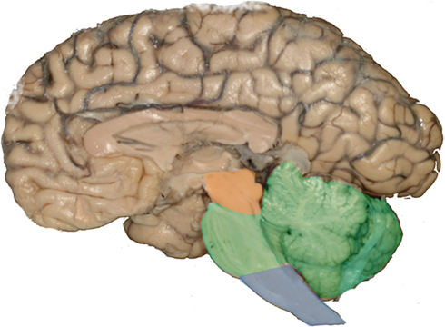

뇌줄기 (Brainstem)

쉽게 풀면
뇌줄기(뇌간)는 나무의 몸통과 같다. 위로는 크고 화려한 대뇌라는 "가지와 잎"이 뻗어 있고, 아래로는 척수라는 "뿌리"로 이어지는데, 이 둘을 연결하는 굵은 줄기가 바로 뇌줄기이다. 뇌줄기는 위에서부터 중뇌, 뇌교, 연수 세 부분으로 이루어져 있으며, 대뇌에서 내려온 명령과 몸에서 올라오는 감각 정보가 모두 이 좁은 통로를 거쳐 지나간다. 동시에 뇌줄기 안에는 숨을 쉬고 심장을 뛰게 하는 것처럼 생각하지 않아도 저절로 돌아가는 생명 유지 중추와, 잠에서 깨어 의식을 또렷하게 유지시켜주는 각성 회로도 모여 있다. 그래서 뇌줄기는 크기는 작지만 손상되면 즉시 생명이 위태로워질 수 있는, 뇌에서 가장 밀도 높은 핵심 구역으로 꼽힌다.
왜 중요한가
뇌줄기는 호흡·순환·각성처럼 생명 유지에 직결되는 기능을 담당하기 때문에, 신경과학과 임상의학 논문 모두에서 예후 판정과 진단의 핵심 축으로 다루어진다. 특히 중환자의학에서는 뇌줄기 반사와 자발 호흡 여부가 뇌사 판정 및 회복 가능성 평가의 기준이 되고, 신경영상 연구에서는 뇌줄기의 미세한 구조 변화가 파킨슨병이나 다발성경화증 같은 퇴행성·탈수초성 질환의 조기 표지자로 주목받는다. 또한 수면·각성 연구에서는 뇌줄기의 망상활성계가 의식 수준을 조절하는 상위 개념과 맞닿아 있어, 마취학이나 수면의학 논문에서도 자주 인용된다.
어디에 있고 어떻게 생겼나
- 뇌줄기는 대뇌와 척수를 잇는 뇌 뒤쪽의 줄기 모양 부분이다. 사람에서는 중뇌, 교(뇌교), 연수로 이루어지고, 간뇌를 포함하기도 한다. 뇌 전체 무게의 약 2.6%에 불과하다.
- 범위는 천막 절흔 바로 위에서 대후두공 아래의 첫째 목뼈까지이다.
- 세로로는 복측의 바닥(기저부), 가운데의 피개, 등쪽의 덮개 세 층으로 이루어진다. 피개가 가장 오래 보존된 부분이며 뇌신경 III~XII의 운동·감각 핵을 품는다.
- 중뇌는 덮개, 피개, 복측 피개 영역으로 나뉜다. 덮개의 하구는 청각 경로의 주 핵이고 상구는 시각과 관련된다. 피개에는 여러 핵과 신경로, 망상체가 있고, 중뇌수도관 주위 회색질은 통증 억제 경로에 관여한다. 동안신경핵(III), 활차신경핵(IV), 적핵, 도파민을 쓰는 흑질 치밀부가 있으며 흑질의 기능 이상은 파킨슨병과 관련된다.
- 교는 중뇌와 연수 사이에 있다. 대뇌에서 연수와 소뇌로 가는 신호와 시상으로 가는 감각 신호의 경로를 품고, 소뇌 다리로 소뇌와 이어진다. 호흡 중추의 교 호흡군(지속흡식중추와 호흡조절중추)이 여기에 있다.
- 연수는 뇌줄기의 아래쪽 절반으로 척수와 이어진다. 심장, 호흡, 혈관운동 중추가 있고, 구토를 조절하는 최후구도 연수의 구조이다. 추체(피라미드) 교차가 연수와 척수의 경계를 이룬다.
맡은 기능
- 호흡과 심박수를 조절하고, 각성과 의식, 수면과 각성, 주의와 집중에 관여한다.
- 몸과 대뇌·소뇌 사이의 모든 정보가 뇌줄기를 지나간다. 올라가는 경로에는 통증과 온도를 전하는 척수시상로, 촉각·고유감각·압각을 전하는 후삭-내측섬유대 경로가 있고, 내려가는 경로에는 상위 운동뉴런의 축삭인 피질척수로가 있다.
- 뇌신경 10쌍(III~XII)이 뇌줄기에서 나와 얼굴, 머리, 내장을 지배한다.
- 망상체는 뇌줄기의 중심부로 격자 구조이며, 척수와 전뇌에서 오가는 정보가 모이고 퍼지게 한다. 뇌줄기 기반의 생명 기능을 조율하고, 각성, 의식, 목표 지향 행동에 이 구조의 온전함이 필수이다.
- 발생에서 중뇌는 세 개의 1차 뇌소포 중 둘째인 중뇌포에서 생긴다. 셋째인 능뇌(후뇌)는 후뇌소포와 수뇌소포로 나뉘어, 후뇌소포가 소뇌와 교가 되고 더 꼬리쪽의 수뇌소포가 연수가 된다.
연구에서 다루는 방식
- 혈액은 기저동맥과 추골동맥에서 받는다. 중뇌의 혈관 분포가 특히 복잡하고 모두 추골-기저동맥계에서 온다. 뇌줄기 경색과 출혈은 드문 편이지만, 그중에서는 교가 허혈성·출혈성 뇌졸중에 가장 흔히 침범된다.
- 병변 부위에 따라 증상이 다르다. 중뇌 뇌졸중은 수직 방향의 눈 움직임 이상이, 교 뇌졸중은 수평 방향의 눈 움직임 이상과 운동·감각·소뇌 증상이, 연수 뇌졸중은 감각·소뇌 결손과 눈 움직임 이상이 주로 나타난다.
- 동안신경, 활차신경, 외전신경의 핵과 내측종속다발이 눈 움직임 조절에 중요하다.
- 논문에서 뇌줄기를 다룰 때는 간뇌를 포함하는지와 병변을 중뇌, 교, 연수 어느 수준으로 보는지를 밝힌다.
논문에서는 이렇게 쓰입니다
실제 논문에서
국내 학술지 논문에서 이 용어가 쓰인 문장을 그대로 옮겼다. 제목·학술지·연도와 원문 링크를 함께 적었다.
“연구방법은 2015년 7월부터 10월까지 뇌줄기 확산강조영상검사를 검사한 35명을 대상으로 하였으며, 기존의 SS-EPI 기법과 SS-TSE 기법을 적용하여 기법별 숨뇌의 신호대잡음비을 비교하였다.”
뇌줄기 확산강조 자기공명영상검사 시 뒤틀림을 줄이기 위한 SS-TSE 기법의 신호대잡음비 연구, 한국방사선학회논문지, 2016 · KCI 한국학술지인용색인 · 원문 보기 ↗
“Stress를 가한군에서 뇌줄기(중뇌의 등쪽솔기핵, 숨뇌의 고립로핵과 미주신경 등쪽핵)의 serotonin 에 대한 면역 반응세포는 대조군이나 melatonin 투여군에 비교하여 강하게 염색되었다.”
만성 스트레스를 받은 흰쥐의 뇌줄기에서 melatonin투여가 serotonin 면역반응에 미치는 영향, 해부·생물인류학, 2004 · KCI 한국학술지인용색인 · 원문 보기 ↗
“동형접합성 선회생쥐가 선천성 귀먹음 환자의 동물모 델인 것을 감안하면 이러한 연구가 선천성 귀먹음 환자들 의 뇌줄기 청각회로의 발달에 대한 이해를 도울 것으로 생 각한다.”
발달 중인 선회생쥐 가쪽위올리브핵 신경세포에 대한 안쪽마름섬유체핵 축삭의 수렴비 변화에 관한 연구, Anatomy and Cell Biology, 2009 · KCI 한국학술지인용색인 · 원문 보기 ↗
조금 더 깊게 보면
뇌줄기를 다루는 논문을 읽다 보면 중뇌·뇌교·연수라는 해부학적 구분 외에도, 그 안을 세로로 관통하는 망상체(reticular formation)와 그물처럼 얽힌 신경핵 집합체를 자주 접하게 된다. 이 망상체는 각성·통증 조절·자율신경 기능처럼 특정 부위에 국한되지 않는 광범위한 조절 작용을 담당하며, 그중 각성과 의식 수준에 관여하는 부분을 따로 묶어 망상활성계(reticular activating system)라고 부른다. 영상 연구에서는 뇌줄기 전체를 하나로 보기보다 이러한 하위 핵과 경로 단위로 나누어 분석하는 경우가 많고, 확산텐서영상(DTI)이나 고해상도 MRI를 이용해 신경섬유 다발의 방향성과 무결성을 정량화하는 접근이 널리 쓰인다. 다만 뇌줄기는 크기가 작고 구조가 촘촘해 정밀한 영상 분석이 상대적으로 까다롭다는 점도 함께 언급되는 경우가 많다.
주의할 점
뇌줄기를 연수나 뇌교 중 하나와 같은 것으로 혼동하기 쉽지만, 뇌줄기는 중뇌·뇌교·연수를 모두 포함하는 더 큰 범위의 구조물이다. 임상적으로는 뇌줄기 반사(동공 반사, 각막 반사 등)의 소실 여부가 뇌사 판정의 핵심 기준 중 하나로 쓰이는데, 이는 뇌줄기가 대뇌 상위 기능과는 독립적으로 작동하는 생명 유지 회로를 담고 있기 때문이다.
참고 문헌
- Wikipedia contributors. (n.d.). Brainstem. Wikipedia.
- Heinsen, H., Grinberg, L. T., & Bohnert, S. (2026). Structural and functional anatomy of the brainstem. Handbook of Clinical Neurology, 216, 17-57.
- Moncayo-Gaete, J., & Bogousslavsky, J. (2026). Brainstem vascular syndromes. Handbook of Clinical Neurology, 216, 213-236.